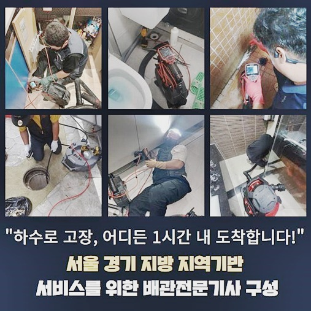
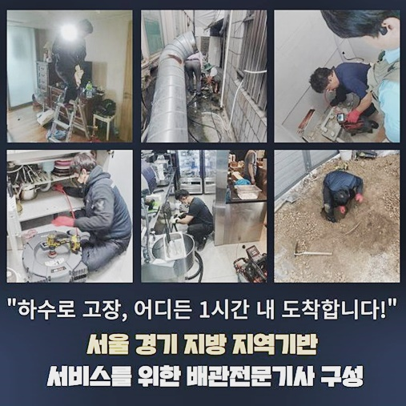
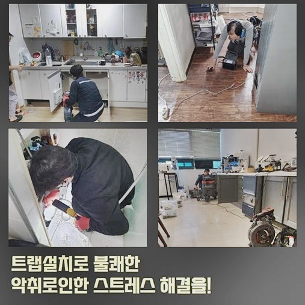
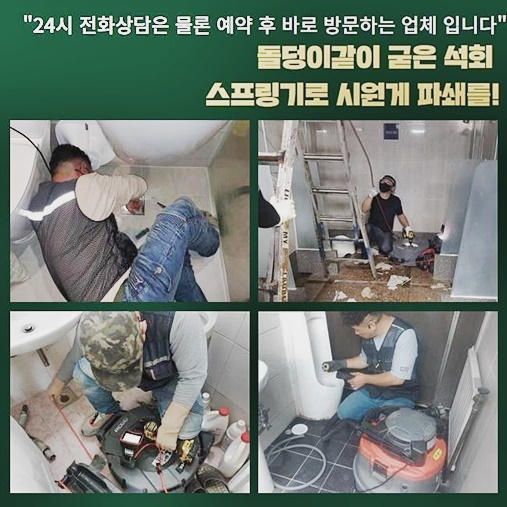
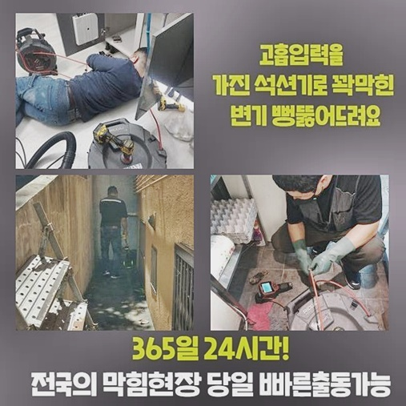
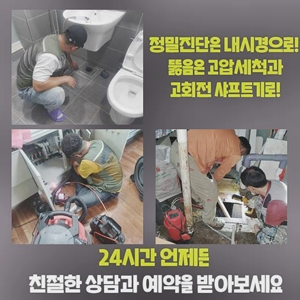
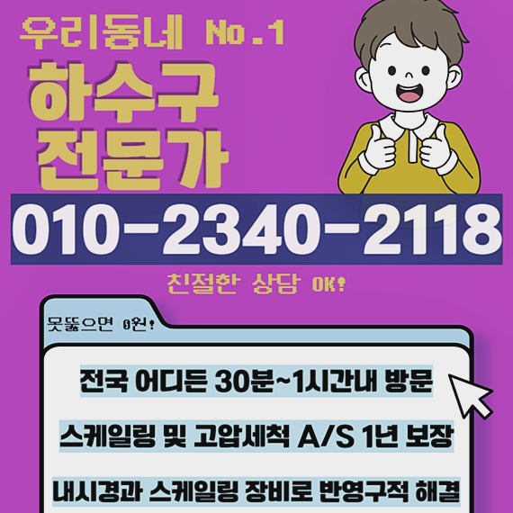

🏠 연수구 선학동화장실하수구막힘 청학동 하수구뚫어주는곳 통수전문
용인 하수구막힘 전문 시공 후기

📋 작업 개요
- 위치: 용인
- 서비스 유형: 하수구막힘, 배관막힘, 역류해결, 뚫는업체, 배관청소, 고압세척
- 작업 일시: 2024. 8. 12. 19:56
- 업체명: 하수구수사대 (010-5615-2118)
🔍 문제 상황
연수구 선학동화장실하수구막힘 청학동 하수구뚫어주는곳 통수전문
주거하는 공간서 배수시스템 장애가 야기돼도 당황을 금치않을 수 없지만 지속적으로 불특정다수가 이용하는 상업시설에서 막혀버리는 사태가 벌어지면 안정적인 작업이 수반되어야해요
금일의 증상도 서둘러 방문드려 해결해드렸는데요
상업목적의 건축물은 구성요소가 주거지나 병원 음식점처럼 다양하게 자리를 잡고있기에 배수시스템 결함이 생긴다면 단순하게 불편한게 아닌 제한된 생활양식 영위로까지 우리에게 다가옵니다
이에 해당하는 피해들을 줄여드리기위해 빨리 막히게된 건물로 향했죠
도착하고보니 1층의 화장실에서 역류증세들도 발생해 하수관을 세심히 관찰했는데요
하수시스템이 자리한 생활을 지속하는 장소에서 발생 가능성이 있는 막히게되는 증세는 명확한 원인들의 조사가 필요하겠는데요
배관의 초반부에 문제가 있는것이라면 간소하게 해결되지만 역류증세들도 야기된거면 점검하여 문제점 파악과정이 중요하겠습니다
전문가를 부르고자 할땐 각별히 주의할것이 배관 교체 및 세척까지 수행해주는 전문인에게 문의해주시는게 좋은데요
물들이 솟아오르는 증세가 발생되었을때는 준비한 내시경기기를 삽입해 컨디션을 체크한뒤 문제들의 연유를 잠재우는 게 중요하겠습니다
또한 도착한다음 속행한 과정은 석션장비로 가볍게 막혀버린것인지 확인해봤습니다
간소하게 해결되지 않을 증상들을 보이면 간소화된 방법으로 시정해내기가 어렵기때문에 집수라인으로 흐르게하는게 필요해지는 사례도 있죠

🔎 원인 분석
💡 전문가 진단: 정밀 진단 장비를 사용하여 슬러지의 고착 여부를 판명하고 타격/세척 작업을 실시했습니다.
이러한 상황에선 배관 간 뻗어있는 결속부분에 자리를 잡으며 연결품 교체들을 수행하는 경우들도 배제할 수 없어요
그렇지만 들여다보았더니 초입부분이 배수장애가 발생된게 아니었죠
한 라인의 증상이 아닌것으로 판단되면 공동배수관이 문제일 확률들이 높을 수 있어요
대중이 쓰는 공간이기에 이런저런 가능성을 제외시키기 어려웠는데요
특정부분이 아니고서 공동관의 증상인지 확인하기위해 곧바로 정밀진단의 단계가 실시되어야했는데요
석션으로 부유물을 빨아당겨 배관끼리 이어진 지점의 증상을 확인해주었어요
설명드린듯이 연결부에 잔해물이 축적되어 증상이 생겨나는 걸 배제할 수 없어서죠
그렇지만 여전히 꿈쩍을 않던 모습이기에 내시경장비를 삽입시켜 각 안쪽 모습을 확인했죠
내시경의 경우 이토록 물흐름에 결함이 생겨났을시 가용되어야하는 장치인데요
잔해가 잔존할 수 있는 하수도라면 거주지와 요식업체 장소를 막론하고 운용해요
대장내시경 절차를 생각하신다면 조금더 어렵지 않게 아실수 있어요
케이블 앞쪽에 연결되어있는 렌즈로 외부에서 군데군데 체크해가며 증세가 야기된 원인들을 찾을 수 있습니다
막히는게 발생되어 제대로 알아보지 않으시고 대강 의뢰한다면 도착하자마자 수리하면서 작업에 대한 과정을 정확히 파악이 안된채로 금액청구를 이행하는 불상사가 있을지도 몰라요

🔧 작업 과정
이러하기에 내용을 보셔서 어떨때 무슨 기기를 쓰는건지 약간의 관심을 기울이시면 도움이 되실거에요
전문기기를 활용하거나 냅다 작업규모가 커질것이라며 수리를 속행하는 전문인을 가를 수 있어요
내시경의 앞스팟을 막아서는 흡착물이 벽면에도 심각했던걸 보았으므로 샤프트장치를 삽입시켜 내측의 청소가 이행되어야 했답니다
관로가 기능장애를 보이는 사례는 한두가지가 아닌데 오늘처럼 전체라인들이 막힌것이면 자가적으로 해결하는게 힘들죠
방임적인 태도로 해결되기를 바라기에 앞서 신속하게 목격하자마자 진단을 거쳐 부유물을 제거시키는 전문성을 갖춘 손길을 받아보시는것이 2차적인 문제도 예방가능해요
샤프트장비로 말씀드리면 라인에 이물을 제거하는 체인들이 연결되어 있어요
사슬모양으로서 작동 시 회전하며 부유물들을 제거하거나 오거로 교체해 바깥으로 빼내주는데요
하수구 뚫는 과정은 도로나 음식점등의 현장등에서 주로 행해지는 작업이죠
이 과정은 안에서부터 야기되는 폐기물과 쓰레기들을 제거시켜 효율성을 회복케하고 위생상으로도 이점이 많아요
이와같은 과정들은 전문성을 갖춘 이가 수행하고 도시환경 측에 속한 시설물이나 바깥에 위치해있는 배수관은 관리되며 청소해주어야 하겠습니다
정확한 방식으로 재발률을 줄이면서 악취와 같은 불편을 피해낼 수 있겠습니다
저희들은 시공해줄땐 내시경기기를 이용해서 증상 시작의 지점들을 다시 관찰하여 무결점으로 규명하는 단계로 신속그러나 오차없이 수리해요
여러분들은 해당 증상이 야기된다면 어떠한 전문가를 결정하는게 최선일지 고심하시면 좋을거에요!
1. 신속한 내방 두번째 자가적 관리법 안내 마지막으로 적당한 장치의 사용
고객의 입장에서 이러한 사항들만 체크해도 시간들을 절약하면서 아무래도 빠른 작업이 이뤄질 수 있어요
지속적으로 하수관을 확인해주면서 부유물을 끄집어냈습니다
끝으로 해체한 부품들을 마무리해줄 수순을 밟아나가야하죠
해당 과정에서 관찰해줘야 되는건 끝정리들을 잘하느냐에 관한 사항입니다
각 라인을 청결하게 세척해주었다면 부속품도 잘 챙겨주어야 하므로 해당 절차도 문제없이 진행했죠
저희전문진은 작업과정을 살피시면 느끼시겠지만 전문진다운 작업을 경험하시며 재발하지 않도록 수리에 심혈을 기울입니다


✅ 작업 완료
이같은 자신감으로 동일 증세가 야기된 탓에 말씀하신다면 1년의 기간에 걸쳐 무료로 수리해드립니다
그렇지만 고객의 실수들이 발생하지않도록 힘써 예방들을 해주셔야 합니다
하수관로로 흐를 수 있는 이물들이라던가 기름은 힘써 피해서 가능하면 수도들만 흐르게끔 거름망들을 설치해주는것에 신경쓰시기를 바라요
저희업체의 추후관리책의 보장은 자신있죠
오늘도 명확히 세척을 실시하였고 주변까지 정리하여 끝내준 곳이였답니다
작업에 있어서 고객에게 이해하기 쉬운 안내로 진행과정들을 상담하고있기에 빠른 고민해소를 원할 시 저희에게 불편을 토로해보세요!




⚠️ 하수구 배관 막힘 예방 및 관리 가이드
- ✅ 머리카락, 비닐, 물티슈 등 물에 분해되지 않는 이물질은 하수구 유입을 절대 금지해 주세요.
- ✅ 하수구 거름망을 씌우고 모여진 이물질은 주기적으로 쓰레기통에 바로 비워주셔야 합니다.
- ✅ 배관 노후가 심할 경우 이물질이 더 쉽게 걸리므로 주기적인 배관 세척(고압세척 등)을 권장합니다.
- ✅ 작업 후 1년 이내 재발 시 하수구수사대에서 무상 A/S 보증 서비스를 제공합니다.
💡 핵심 정리
- 확실한 장비 작업(내시경 점검 및 샤프트 스케일링)으로 원인을 뿌리 뽑습니다.
- 작업 후 1년 이내에 동일한 부위 재발 시 100% 무상 A/S 서비스를 보장합니다.
- 서울 · 경기 · 인천 전 지역에 24시간 언제든 긴급 출동할 수 있도록 항시 대기 중입니다.
❓ 자주 묻는 질문 (FAQ)
🚨 용인 하수구막힘 문제로 고민이신가요?
정확한 원인 진단과 확실한 시공으로 재발 없는 해결을 약속드립니다.
24시간 긴급 출동 | 서울 · 경기 · 인천 전지역 | 1년 내 재발 시 무상 A/S